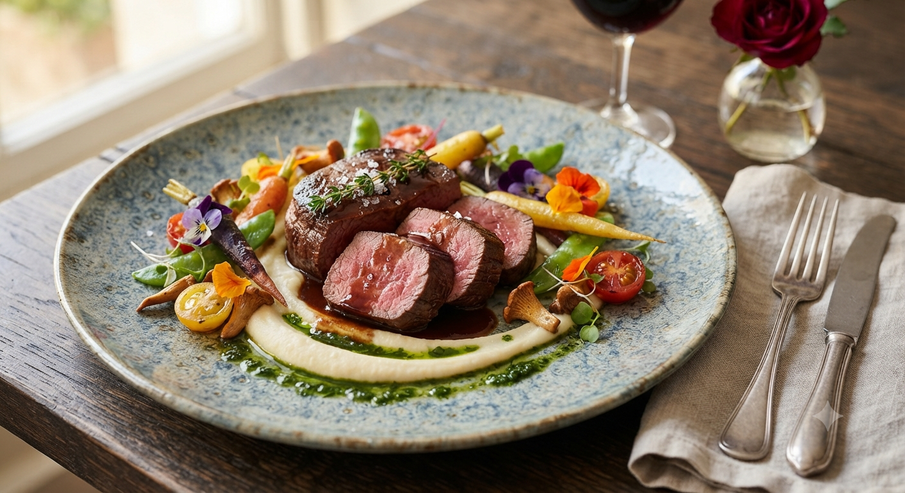
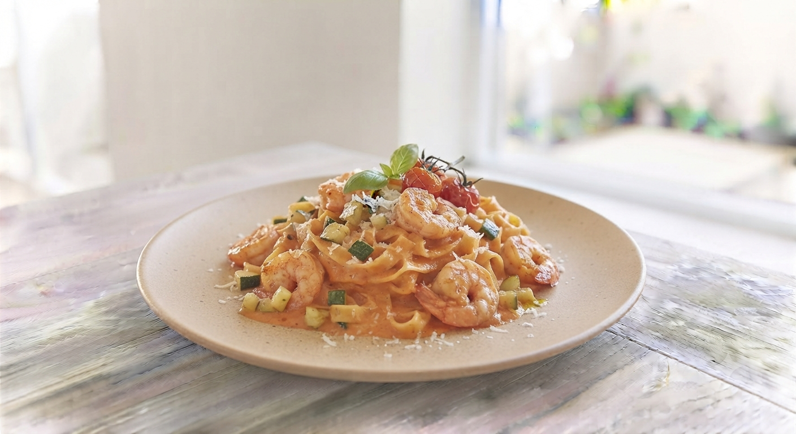
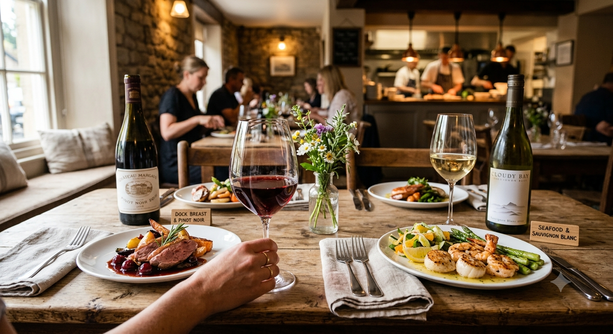
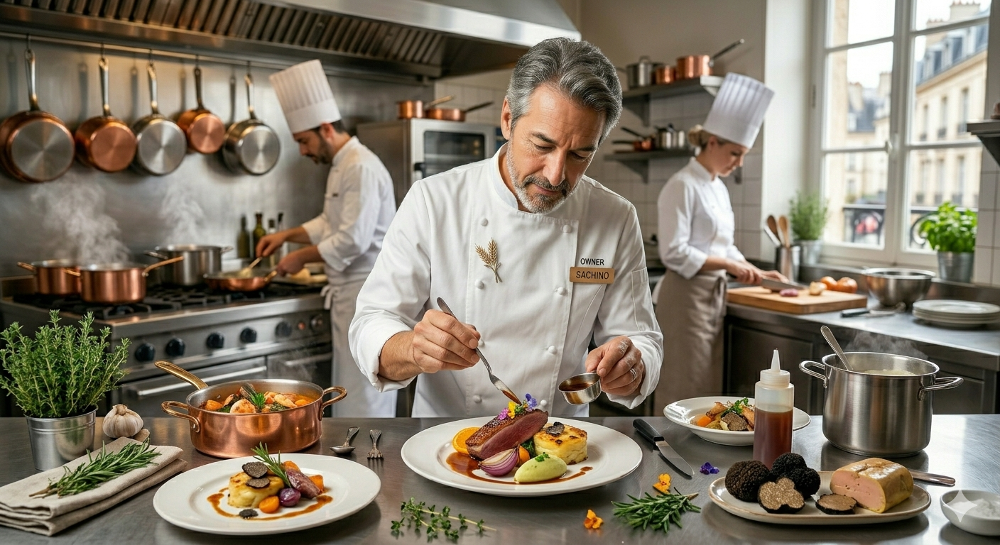
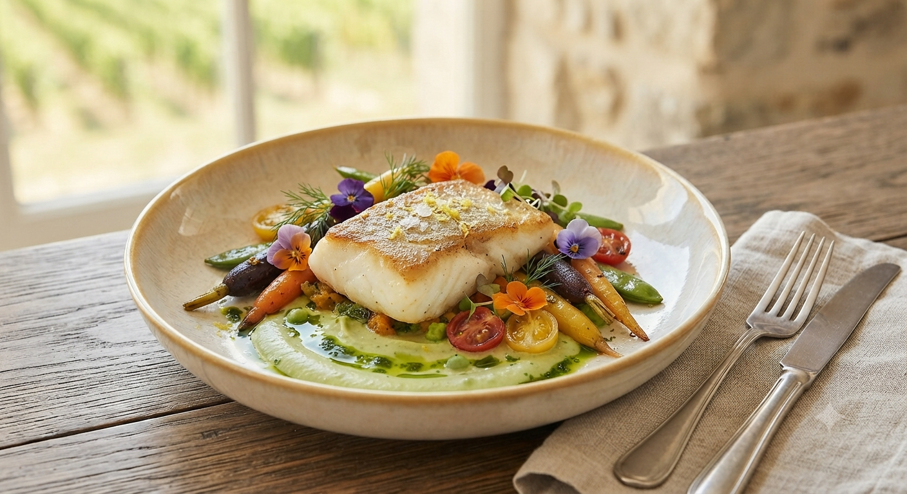

札幌の地で磨き抜かれた
一皿の、深い物語。
厳選された肉、繊細なスパイス、熟成の時。
「小料理屋スタイル」が生む、本格の味。

イタリアンの要素を巧みに取り入れ、日本人の感性に響くフレンチを追求。旬のジビエも手がける職人の腕前は、一口食べればその違いがわかります。小規模店だからこそできる、緻密な火入れと調味をご堪能ください。

名物のパテ・ド・カンパーニュには、選び抜かれたワインが不可欠。リーズナブルでありながら、料理を一層引き立てるペアリングを店主が自ら提案。お酒を嗜む大人たちが、静かに、そして深く親しめる空間がここにあります。
「自分のお店で、思う存分腕を振るいたい」。その想いから生まれたピエドコションは、実質ワンオペという、ストイックなスタイルを選びました。
一人ひとりの顔を見て、一皿を仕上げる。タイミングよくお出しすることは難しいかもしれません。しかし、一皿に込める「密度」は誰にも負けません。
かつてお世話になった方、新しい出会い、すべてのお客様に最高の一皿を届けることが私の誇りです。
— 店主自ら、魂を込めて。


ピエドコションが目指す、新しい食の体験
「フレンチや地中海料理は少しハードルが高い…」という方へ。看板メニューの「パテ・ド・カンパーニュ」をはじめ、人気のポトフやクロックムッシュを一口ずつ楽しめる初心者限定の入門セットを準備中です。
準備中 / 近日公開予定「お酒が飲めないけれど、夜の本格料理を楽しみたい」というお客様の声にお応えし、ハーブやスパイスを効かせた自家製モクテル(ノンアルコールドリンク)と料理の極上ペアリングメニューを開発しています。
準備中 / 近日公開予定ACCESS INFO